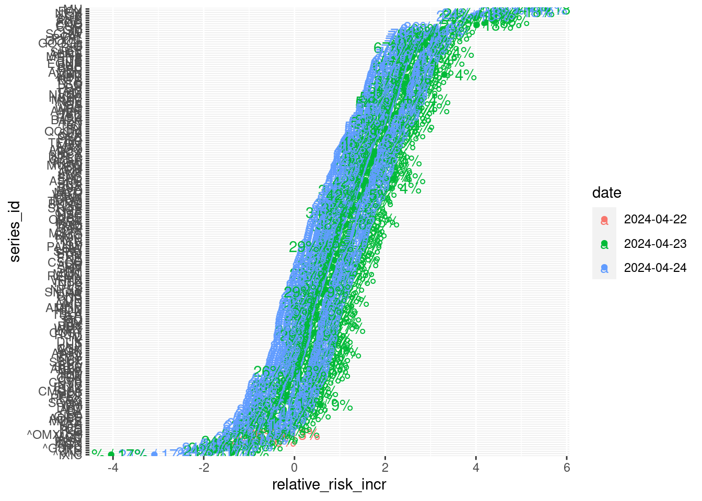
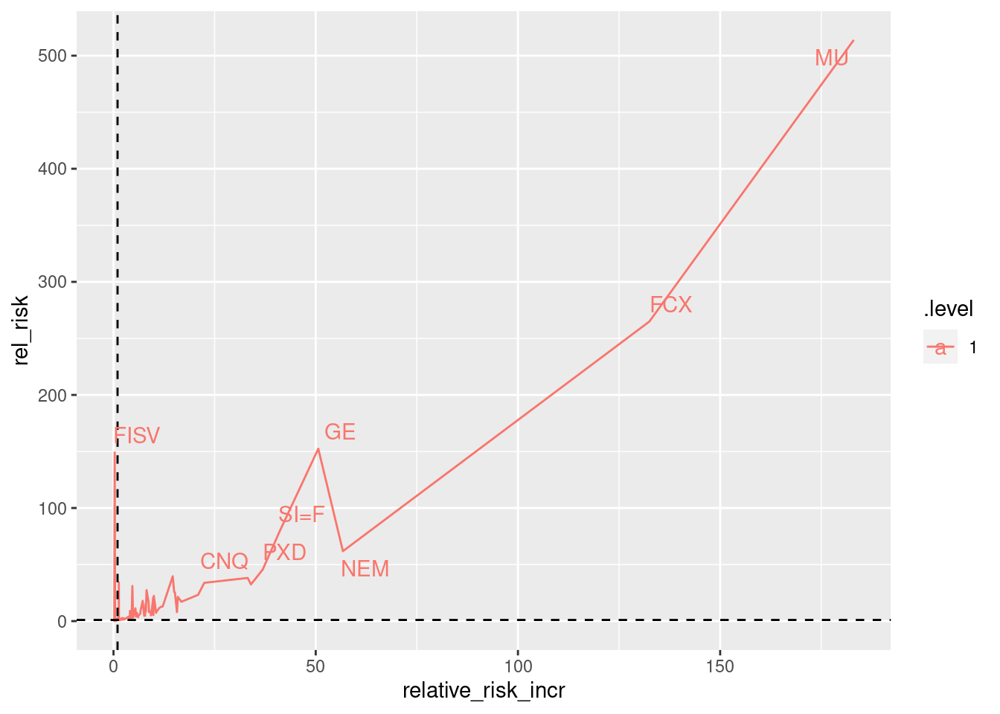
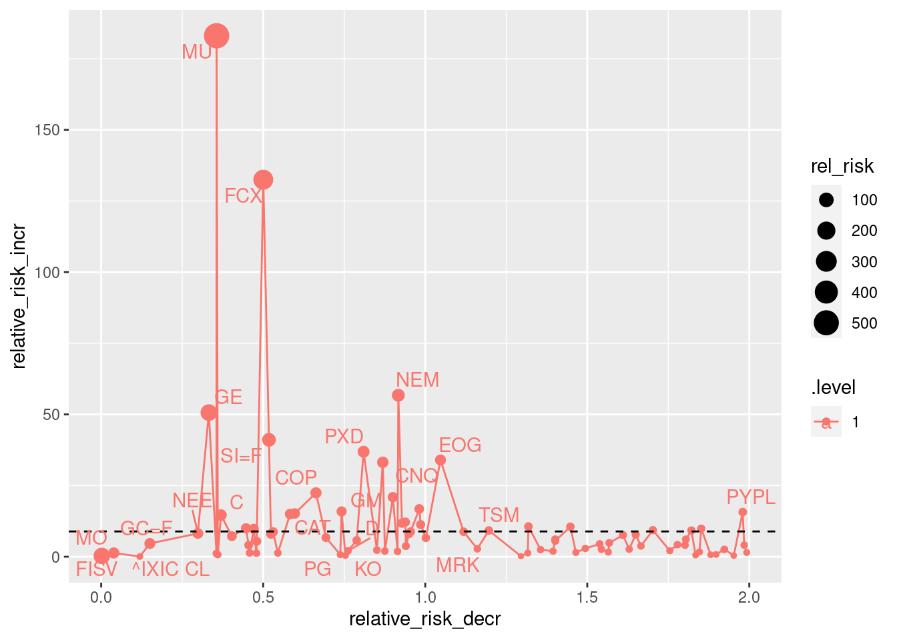

6 Prediction going forward



6.1 Best buy the dip
## # A tibble: 396 × 21
## date value series_id rsi_14 sma50_200 macd_osc macd_s…¹ macd_…² bband…³
## <date> <dbl> <chr> <dbl> <dbl> <dbl> <dbl> <dbl> <dbl>
## 1 2024-04-24 32.6 INTC 19.1 1.56 -6.13 -4.96 -1.17 0.0853
## 2 2024-04-23 149. SNOW 38.0 3.19 -4.09 -4.39 0.294 0.217
## 3 2024-04-24 141. SNOW 32.0 1.53 -4.33 -4.38 0.0505 -0.0592
## 4 2024-04-24 139. ZTS 13.5 -6.20 -5.09 -4.29 -0.804 -0.0731
## 5 2024-04-23 146. ZTS 17.4 -5.16 -4.60 -4.09 -0.509 0.0407
## 6 2024-04-23 34.3 INTC 23.1 1.78 -5.68 -4.67 -1.01 0.161
## 7 2024-04-24 77.1 SONY 14.6 -1.70 -2.42 -1.86 -0.560 -0.234
## 8 2024-04-24 162. BA 24.1 -20.7 -3.75 -3.37 -0.385 0.0696
## 9 2024-04-24 136. TSLA 25.6 -47.4 -5.85 -4.06 -1.79 -0.0307
## 10 2024-04-24 63.7 GILD 19.4 -4.79 -2.83 -2.34 -0.491 -0.0337
## # … with 386 more rows, 12 more variables: cci <dbl>, momentum <dbl>,
## # pct <dbl>, cmo <dbl>, gain_pct_30_days <dbl>, lin_coef_14 <dbl>,
## # lin_rsq_14 <dbl>, exp_coef_14 <dbl>, exp_rsq_14 <dbl>,
## # relative_risk_incr <dbl>, relative_risk_decr <dbl>, rel_risk <dbl>, and
## # abbreviated variable names ¹macd_signal, ²macd_osc_signal, ³bbands_pctb